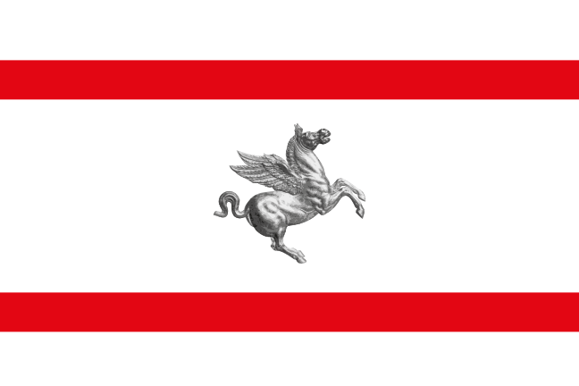
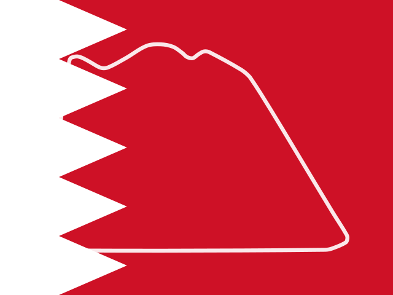

Récords de vuelta por circuitoLap records by circuitRecords du tour par circuit
La vuelta más rápida en carrera entre las que recoge este sitio (2016–2026). No es el récord oficial: no cuenta temporadas anteriores ni vueltas de clasificación. Si un circuito cambió de trazado, cada versión cuenta por separado.The fastest race lap among those this site holds (2016–2026). It is not the official record: it ignores earlier seasons and qualifying laps. If a circuit changed its layout, each version counts separately.Le tour le plus rapide en course parmi ceux que recense ce site (2016–2026). Ce n'est pas le record officiel : il ignore les saisons antérieures et les tours de qualification. Si un circuit a changé de tracé, chaque version compte séparément.
Por ahora esta página solo muestra récords de vuelta; en el futuro se añadirán otras clases de récords, aún por determinar.For now this page only shows lap records; other kinds of records will be added in the future, yet to be determined.Pour l'instant, cette page n'affiche que des records du tour ; d'autres types de records seront ajoutés à l'avenir, encore à déterminer.
| CircuitoCircuitCircuit | RécordRecordRecord | PilotoDriverPilote | EquipoTeamÉquipe | AñoYearAnnée | Carreras analizadasRaces analysedCourses analysées |
|---|---|---|---|---|---|
 Albert Park Circuit (hasta 2019until 2019jusqu'en 2019) Albert Park Circuit (hasta 2019until 2019jusqu'en 2019) |
1:25.580 | Valtteri Bottas | Mercedes AMG | 2019 | 4 (2016–2019) |
| Albert Park Circuit (desde 2022since 2022depuis 2022) |
1:19.813 | Charles Leclerc | Scuderia Ferrari | 2024 | 5 (2022–2026) |
 Algarve International Circuit Algarve International Circuit |
1:18.750 | Lewis Hamilton | Mercedes AMG | 2020 | 2 (2020–2021) |
 Autodromo Enzo e Dino Ferrari (Imola) Autodromo Enzo e Dino Ferrari (Imola) |
1:15.484 | Lewis Hamilton | Mercedes AMG | 2020 | 5 (2020–2025) |
 Autódromo Hermanos Rodríguez Autódromo Hermanos Rodríguez |
1:17.774 | Valtteri Bottas | Mercedes AMG | 2021 | 9 (2016–2025) |
 Autodromo Internazionale del Mugello |
1:18.833 | Lewis Hamilton | Mercedes AMG | 2020 | 1 (2020) |
 Autódromo José Carlos Pace (Interlagos) Autódromo José Carlos Pace (Interlagos) |
1:10.540 | Valtteri Bottas | Mercedes AMG | 2018 | 9 (2016–2025) |
| Autodromo Nazionale di Monza |
1:20.901 | Lando Norris | McLaren — Mercedes | 2025 | 11 (2016–2026) |
 Bahrain International Circuit Bahrain International Circuit |
1:32.014 | Max Verstappen | Red Bull Racing — Honda | 2020 | 10 (2016–2025) |
 Bahrain International Circuit (trazado exteriorouter layouttracé extérieur) |
0:55.404 | George Russell | Mercedes AMG | 2020 | 1 (2020) |
 Baku City Circuit Baku City Circuit |
1:43.009 | Charles Leclerc | Scuderia Ferrari | 2019 | 10 (2016–2026) |
 Circuit de Barcelona-Catalunya (con la chicane final, hasta 2022with the final chicane, until 2022avec la chicane finale, jusqu'en 2022) Circuit de Barcelona-Catalunya (con la chicane final, hasta 2022with the final chicane, until 2022avec la chicane finale, jusqu'en 2022) |
1:18.149 | Max Verstappen | Red Bull Racing — Honda | 2021 | 7 (2016–2022) |
| Circuit de Barcelona-Catalunya (sin la chicane final, desde 2023without the final chicane, since 2023sans la chicane finale, depuis 2023) |
1:15.743 | Oscar Piastri | McLaren — Mercedes | 2025 | 4 (2023–2026) |
 Circuit de Monaco Circuit de Monaco |
1:12.909 | Lewis Hamilton | Mercedes AMG | 2021 | 10 (2016–2026) |
 Circuit de Spa-Francorchamps Circuit de Spa-Francorchamps |
1:44.701 | Sergio Pérez | Red Bull Racing — Honda RBPT | 2024 | 11 (2016–2026) |
 Circuit Gilles Villeneuve Circuit Gilles Villeneuve |
1:13.078 | Valtteri Bottas | Mercedes AMG | 2019 | 9 (2016–2026) |
 Circuit of the Americas Circuit of the Americas |
1:36.169 | Charles Leclerc | Scuderia Ferrari | 2019 | 9 (2016–2025) |
 Circuit Paul Ricard Circuit Paul Ricard |
1:32.740 | Sebastian Vettel | Scuderia Ferrari | 2019 | 4 (2018–2022) |
 Circuit Zandvoort Circuit Zandvoort |
1:11.097 | Lewis Hamilton | Mercedes AMG | 2021 | 6 (2021–2026) |
| Circuito de Madring |
1:35.587 | George Russell | Mercedes AMG | 2026 | 1 (2026) |
 Hockenheimring Hockenheimring |
1:15.545 | Lewis Hamilton | Mercedes AMG | 2018 | 3 (2016–2019) |
 Hungaroring Hungaroring |
1:16.627 | Lewis Hamilton | Mercedes AMG | 2020 | 11 (2016–2026) |
 Istanbul Park Istanbul Park |
1:30.432 | Valtteri Bottas | Mercedes AMG | 2021 | 2 (2020–2021) |
 Jeddah Corniche Circuit Jeddah Corniche Circuit |
1:30.734 | Lewis Hamilton | Mercedes AMG | 2021 | 5 (2021–2025) |
| Las Vegas Strip Circuit |
1:33.365 | Max Verstappen | Red Bull Racing — Honda RBPT | 2025 | 3 (2023–2025) |
 Lusail International Circuit Lusail International Circuit |
1:22.384 | Lando Norris | McLaren — Mercedes | 2024 | 4 (2021–2025) |
 Marina Bay Street Circuit (hasta 2022until 2022jusqu'en 2022) Marina Bay Street Circuit (hasta 2022until 2022jusqu'en 2022) |
1:41.905 | Kevin Magnussen | Haas — Ferrari | 2018 | 5 (2016–2022) |
| Marina Bay Street Circuit (desde 2023since 2023depuis 2023) |
1:33.808 | Lewis Hamilton | Scuderia Ferrari | 2025 | 4 (2023–2026) |
| Miami International Autodrome |
1:29.708 | Max Verstappen | Red Bull Racing — Honda RBPT | 2023 | 5 (2022–2026) |
| Nürburgring |
1:28.139 | Max Verstappen | Red Bull Racing — Honda | 2020 | 1 (2020) |
 Red Bull Ring Red Bull Ring |
1:05.619 | Carlos Sainz Jr. | McLaren — Renault | 2020 | 13 (2016–2026) |
 Sepang International Circuit Sepang International Circuit |
1:34.080 | Sebastian Vettel | Scuderia Ferrari | 2017 | 3 (2016–2026) |
 Shanghai International Circuit Shanghai International Circuit |
1:34.742 | Pierre Gasly | Red Bull Racing — Honda | 2019 | 7 (2016–2026) |
 Silverstone Circuit (desde 2010since 2010depuis 2010) Silverstone Circuit (desde 2010since 2010depuis 2010) |
1:27.097 | Max Verstappen | Red Bull Racing — Honda | 2020 | 12 (2016–2026) |
 Sochi Autodrom Sochi Autodrom |
1:35.761 | Lewis Hamilton | Mercedes AMG | 2019 | 6 (2016–2021) |
 Suzuka International Racing Course Suzuka International Racing Course |
1:30.965 | Andrea Kimi Antonelli | Mercedes AMG | 2025 | 9 (2016–2026) |
 Yas Marina Circuit (hasta 2020until 2020jusqu'en 2020) Yas Marina Circuit (hasta 2020until 2020jusqu'en 2020) |
1:39.283 | Lewis Hamilton | Mercedes AMG | 2019 | 5 (2016–2020) |
| Yas Marina Circuit (desde 2021since 2021depuis 2021) |
1:25.637 | Kevin Magnussen | Haas — Ferrari | 2024 | 5 (2021–2025) |